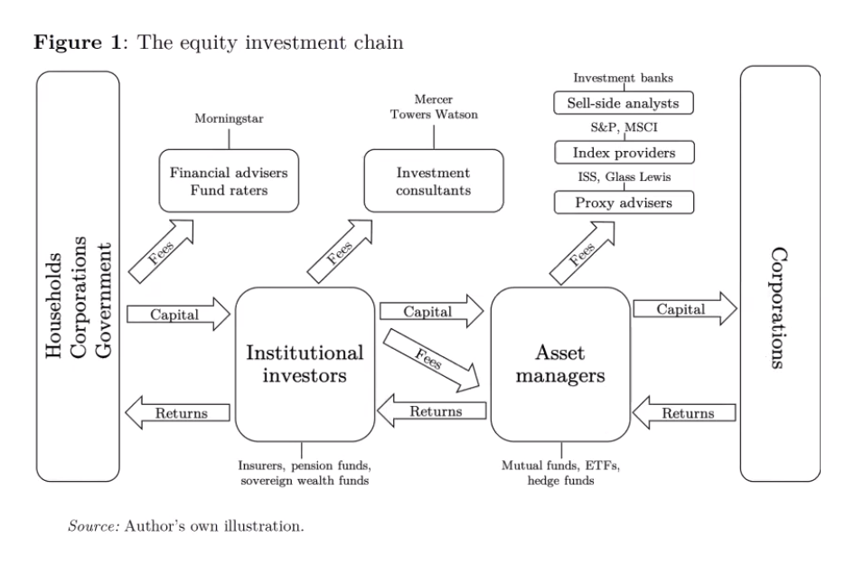

4 Financial System
Ryan-Collins
Credit drives Housing Prices
One of the most remarkable, but neglected, macroeconomic shifts in the past 50 years has been the transformation of banking systems in advanced economies from their textbook role of lending to non-financial firms for working capital and investment to becoming real estate lenders ( Jordà et al. 2017). Mortgage lending in advanced economies increased on average from 40 percent of GDP in the mid-1990s to almost 70 percent by the finan- cial crisis of 2007–2008, whilst the stock of business loans rose by little more than 5 percent ( Jordà et al. 2017). During the same period, average real house prices followed a path similar to that taken by mortgage credit, doubling in value, suggesting credit was the primary driver of rising prices.
Ryan-Collins (2021) Private Landed Property and Finance: A Checkered History (pdf)
4.1 Asset Manager Capitalism
Asset manager capitalism is a structure of power. It is interwoven with policy. It has expanded at the same time as central bank asset purchases (QE) have become the key tool of macro-policy. It is expanding the frontiers of financialization into every area of life. Asset managers need yield. They get yield by financializing everything from real estate to natural capital. And this is capitalism. It is interwoven with social structure, inequality and class.
Braun
The political economy literature explains financialization in the United States as the result of policymakers – for reasons specific to the American political economy between the late 1960s and early 1980s – turning to financial markets to solve problems of governability and profitability. My argument, although compatible with this conjunctural explanation, instead emphasizes the macroeconomic – and historically recurring – process of wealth accumulation as an underlying, structural cause.
The puzzle that arises from this argument: the strange non-death of the rentier in an era of financial capital abundance. Keynes predicted that once the resource the financial sector controls became abundant, the “cumulative oppressive power of the capitalist to exploit the scarcity-value of capital” would decline. Recent economic history has borne out the first part of Keynes’ prediction, but not the second: Finance capital has become abundant, but the rentier has returned to “rude health”
As per Piketty, the best measure of this health is the gap between the rate of return on capital (r) and the rate of economic growth (g). Subsequent work has shown this gap to have proven remarkably resilient in recent decades.
My central proposition is that whereas capital scarcity increases the exit-based structural power of finance, capital abundance strengthens the ownership- and control-based structural power of finance.
The asset management sector comprises, first and foremost, mutual funds and exchange-traded funds, as well as the less regulated and more leveraged institutions, namely hedge funds, private equity funds, and venture capital funds. 8 Although the distinction tends to get blurry in practice, there is a fundamental difference between institutional investors that are asset owners, and asset managers that are pure intermediaries in the business of managing other people’s money for a fee-
The asset management sector has seen exceptional growth over the past half century. What is more, since the global financial crisis of 2008 most global banks have greatly expanded their asset management arms, as have many insurers. On the list of the world’s top-10 asset managers, the “Big-Three” asset managers (BlackRock, Vanguard, and State Street Global Advisors) are closely followed by the asset management arms of Goldman Sachs, Allianz, and the like.
The assets of investment funds started to rise steeply in the 1980s and especially the 1990s, and today stand at twice the level of bank assets loans. The growth of institutional capital pools in general, and the concentration of the asset management sector in particular, have fundamentally reshaped financial markets and the structure of financial asset ownership.
share ownership concentration, believed to be an anachronism belonging to the finance capital era, made a comeback through the backdoor of the retirement-asset fueled lengthening of the investment chain. As a result of this “Great Re-concentration”, the United States is no longer the dispersed ownership society that scholars across disciplines and across generations – from Berle and Means, to Jensen and Meckling, to Hall and Soskice – took for granted.
Large, voice-affording stakes and full diversification ceased to be mutually exclusive; while liquidity – and thus the exit option – had evaporated. This combination makes asset manager capitalism historically unique, and the implications for the structural power of wealth owners and their financial intermediaries are by no means straightforward.
In their quest for scale, large asset managers have essentially relinquished the option to exit individual investments. This is a consequence, first, of the size of their stakes in individual companies – which even in a liquid market cannot be sold without causing a major drop in the share price. Second, the loss of exit is a feature of the index-tracking investment strategies pursued by the majority of funds offered by the Big-Three asset managers. The existing theoretical framework would predict the structural power of large asset managers to be weakened by this loss.
The loss of the exit option is compensated, however, by the increase in voice. One source of asset manager voice is the brute voting power that comes with large shareholdings. Their voting power makes the large index-tracking asset managers key allies for hedge funds, which routinely seek the support of the Big Three for their activist campaigns.
The second source of asset manager voice is diversification. The Big Three have promoted the narrative that their fully diversified (“universal”) shareholdings make them the quintessential long-term shareholders, whose interests are aligned with environmental, social, and governance (ESG) objectives.
Whether asset managers actually wield their structural power, and in whose interest, remains an open question. If the logic of universal ownership is compelling in theory, in practice it is counteracted by a host of “agency problems”, ranging from the cost of exercising voice to the cost of alienating the corporate managers who control the allocation of retirement plan assets to competing asset managers.
Asset managers’ dominant role in capital markets affords them infrastructural power vis-a-vis fiscal and monetary authorities. Hiring BlackRock to support their market operations has become routine for central banks around the world.
Asset managers’ overriding preference is for welfare state policies that increase private household savings and, crucially, for macroeconomic policies that sustain high asset prices. This shift in financial-sector preferences has far-reaching implications for the political economy of macroeconomic policy.
Braun (2021) Asset Manager Capitalism (pdf)
Tooze
We live in a remarkable world. As of July 20 2021, three asset managers, BlackRock, Vanguard Group and State Street Corp. collectively owned about 22% of the average S&P 500 company, according to data compiled by Bloomberg, up from 13.5% in 2008.
On Benjamin Braun:
INVESTMENT is about wealth preservation NOT productivity enhancement!
Financial capital has become abundant in the global economy. The logic of supply and demand would suggest that wealth owners and their financial intermediaries should see their structural power decline. Paradoxically, the ultimate gauge of rentier power – the gap between the rate of return on capital (r) and the rate of economic growth (g) – has proven remarkably resilient since the 1980s. Why did this gap not shrink? The guiding hypothesis of this project is that the power of wealth owners is partly a function of the organization of finance. The project studies the rise of different types of asset managers – firms that pool and manage “other people’s money” – and their impact on the economic and political determinants of the rate of return on capital.
Asset manager capitalism differs from early 20th-century “finance capital” because unlike the banks studied by Hilferding, today’s asset management giants combine control with diversification.

The key point to recognize is how asset managers earn their money. It isn’t through the returns of the corporations they invest in, but through the fees paid to them by institutional investors who aggregate the funds of households, corporations, governments etc. Those fees, of course, will ultimately only roll in if the asset managers earn good returns. But, if you stripped this down, the households could ultimately own the assets themselves. Adding the intermediation, advice, expertise, reduction of complexity etc etc is the key to the entire business.
Asset managers are mediated owners. They are mediated also as a result of the sheer size of their portfolios. They are radically diversified, owning slices of practically every corporation worth anything. But their bulk means that their ability to exit stock is limited. They are simply too big.
Like a robber baron, BlackRock has achieved a high concentration of ownership. Unlike a robber baron it has a huge diversification of what it owns and a limited interest in any particular bit of its portfolio. This somewhat paradoxical state of being into everything and unable to get out, gives rise to the idea that asset managers are what is called “universal owners”.
Not only do institutional investors own a majority of the public equity of the world, but through that ownership, their success as investors is dependent on the performance of the economy at large. Large owners who own a representative “slice” of the economy are more dependent on general macroeconomic performance than on the performance of any one stock or portfolio.
What BlackRock wants is exorbitant. It wants the public balance sheet to step in backstop any risks that asset managers might be running (in making serious ESG investments.)
And because BlackRock is a huge universal owner, when it asks for a public backstop it means the public balance sheet of the world - no kidding!
It is almost as though someone at BlackRock has been reading the Communist Manifesto and is asking themselves: Where is that “committee for managing the common affairs of the whole bourgeoisie” that we were promised? And no, a 1990s-style ad hoc combo of Greenspan-Summers-Rubin won’t do the trick. Universal owner → universal public backstop please!
The fundamental different political economy produced when government conceives its role as being essentially to derisk investment by gigantic private asset managers.
Focusing on 2008 encapsulates the shift from a bank-centered financial model to the rise of asset management. In 2008-9, banks were discredited by the crisis and literally began to cannibalize themselves to survive.
Asset manager capitalism is a structure of power. It is interwoven with policy. It has expanded at the same time as central bank asset purchases (QE) have become the key tool of macro-policy. It is expanding the frontiers of financialization into every area of life. Asset managers need yield. They get yield by financializing everything from real estate to natural capital. And this is capitalism. It is interwoven with social structure, inequality and class.
Tooze (2022) The Rise of Asset manager Capitalism
Braun
Asset Manager Capitalism is a historically distinct corporate governance regime. Whereas the control-based dominance of finance capital during the early 20 th century was characterized by credit-debt relationships between banks and corporations, today asset managers’ equity holdings dominate; and whereas the shareholder capitalism of the late 20 th century was characterized by impatient investors wielding the threat of exit, the power of asset managers in corporate governance is based on their large and illiquid, yet fully diversified shareholdings. Recent evidence suggests that the structural power wielded by asset managers determines corporate governance outcomes on environmental and social issues, influences product market competition, and shifts the macroeconomic policy preferences of the financial sector.